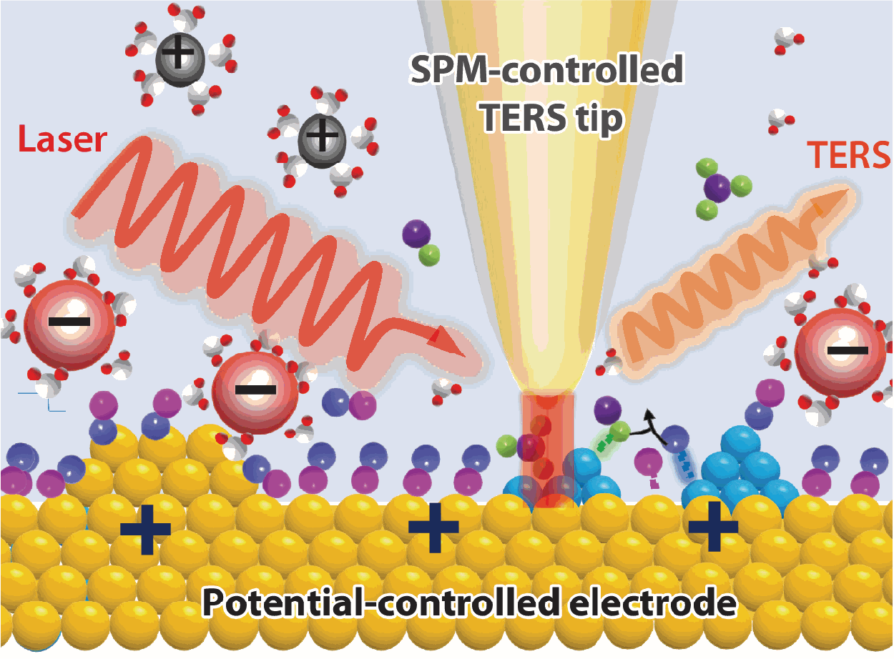
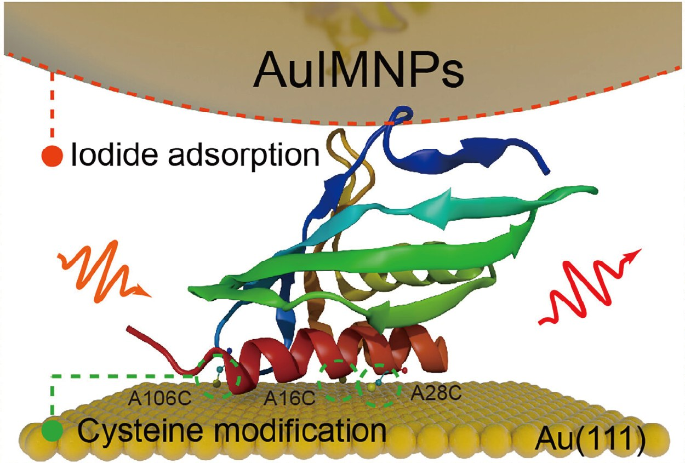
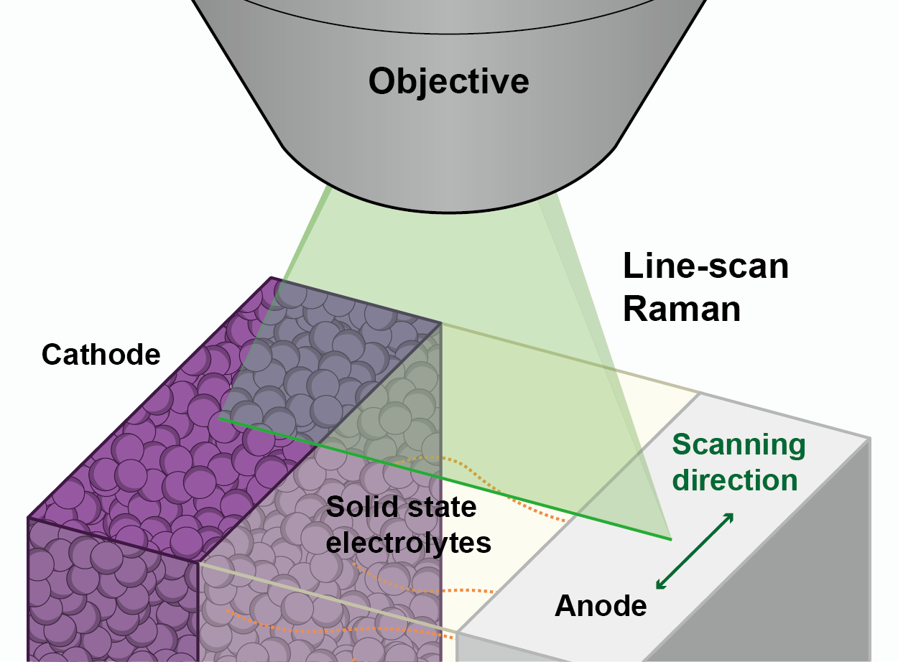
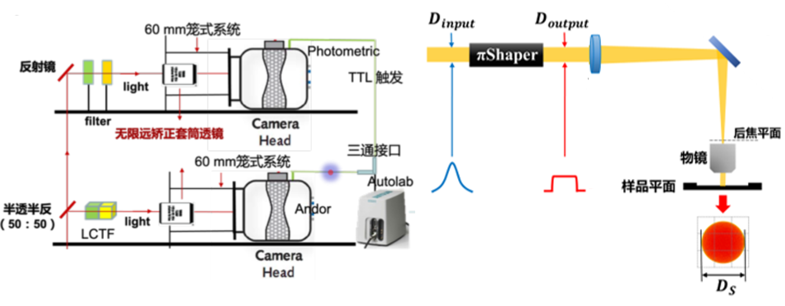

Seeing chemistry
at interfaces.
We develop advanced spectroscopic and electrochemical instrumentation and methodologies for molecular-level studies of surfaces, interfaces, energy systems and biological systems.
Recent work & recognitions
Instruments and methods for molecular-level insight
Prof. Ren's group focuses on the development of advanced spectroscopic and electrochemical instrumentation and methodologies for molecular-level studies of surfaces, interfaces, energy systems, and biological systems.
We are particularly interested in multimodal Raman and electrochemical platforms — surface-enhanced Raman spectroscopy (SERS), tip-enhanced Raman spectroscopy (TERS), dark-field spectroscopy and nanoelectrochemical approaches — with an emphasis on improving sensitivity, spatial and temporal resolution, and structural interpretability. We also develop AI-enabled methods for spectral denoising, quantitative analysis and spectrum–structure correlation.
These advances are applied to key issues in battery systems, electrochemical interfaces and biological systems. We are an interdisciplinary, collaborative team spanning chemistry, physics, biology, materials science and instrumentation.
What we work on
From nanoscale tip-enhanced spectroscopy to home-built instruments and deep-learning spectral analysis.

TERS & EC-TERS
Nanospectroscopy combining scanning probe microscopy with plasmon-enhanced Raman — in air, liquid and under electrochemical control.
Learn more
Bio-SERS
Sensitive SERS detection of proteins, nucleic acids and drugs, and algorithms that decode biomolecular structure from spectra.
Learn more
Battery interfaces
Operando Raman tools for solid–solid interfaces, ion transport in polymer electrolytes and SEI evolution.
Learn more
Instrumentation
Home-built wide-field Raman imaging, EC-TERS 4.0, AFM-TERS and teaching instruments used in classrooms.
Learn more
Intelligent algorithms
Deep learning for spectrum–structure correlation, biological Raman feature extraction and super-resolved characterization.
Learn more